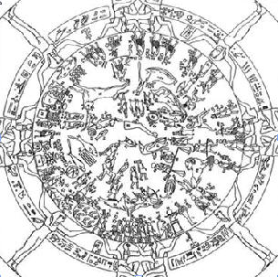
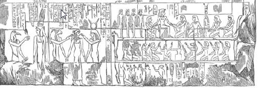

Filmde ilk bir kaç dakika boyunca güneşin ve bu yıldızın kültürlerdeki yerinden bahsediliyor. Bu kısımda bir problem yok; ta ki Zodyak ile ilgili noktaya gelene kadar:
Bu, Zodyak çaprazı. İnsanlık tarihinin en eski kavramsal işaretlerinden biri. Güneşin, bir yıllık süreç içerisinde 12 büyük takımyıldızı içinden geçişini tasvir eder.
Burada geçen “çapraz” sözü, İngilizcedeki “cross” sözünün karşılığıdır. Ancak burada bahsedilen Zodyak bir çapraz değil, 12 parçaya bölünmüş bir tekerlektir. Burada özellikle “cross” kelimesinin kullanılmasının sebebi, “cross” kelimesinin bir anlamının “haç” olmasıdır. Burada Zeitgeist, izleyiciyi birazdan konuyu bağlayacağı İsa hikâyesine hazırlayarak, “Zodyak haçı, Hıristiyanlık haçına dönüşmüştür” fikrini sunmaktadır. 
Zodyak çaprazı’nda her takımyıldızı antropomorfize edilmiş, diğer bir deyişle hayvan ya da doğa figürleriyle kişiselleştirilmiştir. Bir başka deyişle antik toplumlar güneşi ve yıldızları izlemekle kalmamış, onları, hareketlerinin sonucunda meydana gelen olaylarla bağlantılı olarak özenle kişiselleştirmişledir. Güneş, yaşam veren ve yaşamı devam ettiren nitelikleriyle görülemeyen yaratıcının sureti, yani Tanrı olarak kişiselleştirilmiştir.
Bu paragrafta verilen bilgi tam olarak doğru değil. Eski uygarlıklarda güneş görülemeyen bir yaratıcının sureti değildi; ona doğrudan bir tanrı olarak tapılıyordu. Kişileştirildikleri doğru, ancak zaten kişileştirilmiş ama görülemeyen tanrıların bir nevi elçileri, temsilcileri ya da suretleri olduklarını söylemek pek de doğru değil. Film, bu fikri 1494 tarihli Marisilo Ficino’nun yazdığı De Sole isimli bir kitaba dayandırıyor. Fakat bu bilgiyi başka tarihi kaynaklarda doğrulayamıyoruz. Bununla birlikte, Platon’nda, güneş “bilgi kaynağı” olarak gösterilmiştir.
“Tanrı’nın Güneşi”, “Dünyanın Işığı” ve “İnsanlığın Kurtarıcısı” olarak da bilinir.
Buradaki “kurtarıcı” tanımı biraz şaibeli. Zira filmin web sitesindeki kaynakta kurtarıcı olarak Herkül gösterilmi;, ama Herkül’ün dünyevi insanları dünyevi dertlerden kurtarması (insanları karşılaştıkları zor durumlardan birebir kendisi kurtarması) İsa’nın ebedi hayatta kişiyi cehennemden kurtarmasından farklıdır.
Bu, Horus. M.Ö. 3000 civarında Mısır’ın Güneş Tanrı’sıydı. Horus güneşin kişiselleştirilmiş haliydi ve yaşamı güneşin gökyüzündeki hareketiyle ilgili bir dizi hikâyeyle açıklanıyordu. Mısır’daki antik hiyeroglifler sayesinde, bu güneş tanrısı hakkında çok şey biliyoruz.
Horus bir Güneş Tanrı değil, Gök-Tanrı’ydı. Horus’un iki gözü, Güneş (sağ göz) ve Ay (sol göz) ile sembolize edilirdi. Bu sözlerin geçtiği yerde “Solar Messiah” yani “Güneş Mesihi” ifadesi geçmesine rağmen Horus’un Mesih, ya da bir nevi kurtarıcı olduğuna dair herhangi bir bilgiyi diğer kaynaklarda doğrulayamıyoruz. Mesih kelimesi İbranice kökenlidir ve filmin sitesindeki kaynakta da bu türden bir Mesih ifadesi geçmiyor. Buradan da yazarların hikâyeyi İsa’ya bağlayabilmek için “Mesih” sözünü senaryoya dahil ettikleri sonucu çıkıyor.
Bir sonraki cümle şu şekilde:
Örneğin, güneşi ve ışığı temsil eden Horus’un Set adında bir düşmanı vardı ve Set gece karanlığının kişiselleştirilmesiydi. Her sabah Horus, Set’e karşı olan savaşını kazanırken akşam olduğunda da Set Horus’u mağlup ederek onu yeraltına gönderir.
Mısır mitolojisindeki Horus ve Set çatışması piramitlerde, mezarlarda ve Shabaka taşında bulunan bir hikâye. Set, Horus’un babası Osiris’i öldürdüğü için Horus Set’le birçok kez savaşmıştır. Bu kısmın kaynağı Acharya S11; ve gece gündüzün birbirini takip etmesinin Horus ve Set’in kavgası şeklinde olduğunu söyleyen başka kaynak yok. Bunun yerine Set ve Horus’un Güney Mısır’ın Kuzey Mısır tarafından fethedilmesinin bir metaforu olduğu söyleniyor. Set çöl, karanlık ve kaos tanrısıdır; Horus’un da sağ gözü güneştir. Belki buradan bir bağlantı kurulabilir, ancak bunu destekleyecek ifadeler Mısır mitolojisinde mevcut değil. Bu hikâyedeki diğer ilginç bir nokta, Horus ve Set’in savaşı sırasında Set’in bir testisini kaybetmesi (ve çöl bu yüzden çoraktır), Horus’un da sol gözünden yaralanmasıdır (bu yüzden Ay Güneş’e oranla çok daha az ışık verir).
Bir sonraki sahnede, film Horus’un hikâyesini İsa’nınkine birçok açıdan benzediğini anlatır:
Horus, 25 Aralık’ta bakire İsis-Meri tarafından dünyaya getirilir.
İsis, Horus’un babası Osiris’le evli bir tanrıçaydı ve Mısır mitolojisinde onun bakireliğinden bahsedilmez. Osiris Set tarafından öldürüldükten sonra İsis, Osiris’in parçalarını bir araya getirir, ancak eksik olan tek parça Nil nehrindeki bir balık tarafından yenmiş olan penistir. Onun yerine altından bir penis yapılır ve Osiris’e bu altın penis yerleştirilir; daha sonra İsis’le cinsel ilişkiye girerler ve sonucunda Horus doğar. Görüldüğü gibi bu hikâyede “Bakire’den doğum” pek mümkün değildir. 25 Aralık tarihi, aslında İncil’den gelen bir tarih değil; ancak buna daha sonra tekrar döneceğiz. Horus’un doğumgünü olarak kutlanan bayram Khoiak Bayramı’dır ve kasım ayındadır.
Peki İsis-Meri nerden geliyor? Meri kelimesi eski Mısır dilinde sevilen manasına gelen bir kelimedir. “Sevilen İsis” gibi bir anlamı vardır. Filmde bu ifadenin verilmesinin sebebi İsis’in Meryem ile ilişkilendirilmeye çalışılmasıdır.
Doğumu, doğudaki bir yıldızla birlikte meydana gelmiştir. Üç kral, yıldızı takip ederek Horus’u bulmuş ve bu yeni doğmuş kurtarıcıyı süslemişlerdir.
Bu iddianın kaynağı yine Acharya S, ve onun kaynağı Mısır’da bulunan Luxor tapınağında bulunan bir kabartmanın tercümesi.
Ancak kabartmanın diğer Mısırbilimciler tarafından tercümesi pek de İsa hikâyesine benzemiyor. Bu kabartmadaki hikâye aşağı yukarı şu şekilde:
Tanrı Amun, insan kraliçenin kralla evleneceği gece (evlilikten önce) Kral’ın kılığına girerek yatağa giriyor. Ama kraliçe kokusundan onun bir tanrı olduğunu fark ediyor. Bunun üzerine Amun kendisini gösteriyor ve kraliçeyle cinsel ilişkiye giriyor. Kabartmada ateşli bir sevişme sahnesi anlatılırken, Amun’un arkadaşı bir başka tanrı olan Thoth yatağın yanında durup onları izliyor. Cinsel ilişkiden sonra kraliçe ve Amun yatakta sohbet ediyorlar ve hatta kraliçe bir noktada Amun’un penisinin ne kadar iri olduğundan bahsediyor. Amun kraliçeye hamile olduğunu ve Amenophis isimli bir erkek çocuk doğuracağını söylüyor. Bir sonraki kabartma panelinde ise bebeğin doğacağı halka duyruluyor ve bebeklere ruh üflemekle görevli olan tanrı Kneph, Amenophis’e ruhunu üflüyor.
Görüldüğü gibi buradaki duyuruda kraliçe zaten bebeğin doğacağından haberdar. O yüzden Hrıistiyan ilahiyatındaki gibi Kutsal Ruh’un bebeğin doğumunu Meryem’e müjdelemesi gibi bir şeyden bahsetmek güç.
Buradaki kabartmada daha düşük rütbeli tanrılar ya da devlet görevlileri görünüyor; bu ayrım tam olarak tercüme edilebilen bir şey değil ancak bunlar üç kral ya da üç yıldızbilimci değil. Çünkü Mısır’da kral olarak düşünülebilecek tek kişi Firavun ve o da kabartmanın başka bir yerinde resmedilmiş. Burada “yıldızbilimci” olarak geçen kişiler İncil’de “Magi” olarak geçen ve aslında “üç bilge adam” olarak tanımlanan kişiler. Burada dikkat edilmesi gereken nokta İncil’de Matta 2:1-12’de geçen hikâyede kaç tane kral-bilge olduğunun söylenmemesi. Ancak üç tane hediye olduğu yazdığı için sanki üç kral varmış gibi düşünülüyor. Oysa aslında kaç tane kral-bilge olduğu net değil. Toparlarsak Acharya S’nin Luxor tapınağında İsa’nın doğumuna çok benzer bir hikâyenin anlatıldığı iddiası çok da sağlam görünmüyor.
12 yaşına geldiğinde, cömert bir çocuk öğretmendi. 30 yaşına geldiğindeyse Anup tarafından vaftiz edildi ve görevine başladı.
Buradaki ifade İsa hikâyesiyle birebir örtüşüyor; zira İsa 12 yaşındayken kaybolur ve bulunduğunda yetişkin filozoflara ders vermektedir; peygamberliğine de 30 yaşındayken başlar. Ancak bu ifadeler Horus’la pek örtüşmüyor. Horus’un çocukluğunu gösteren resim ve heykellerin neredeyse tamamı annesi İsis’le birlikte olduğu resimler ve heykelle; zira İsis Horus’u 30 yaşına kadar saklıyor. Saklandığı için de öğretmenlik yaptığına dair bir hikâye ya da yazı yok. Anup isminin kullanılması İsa’nın Vaftizci Yahya tarafından (John) vaftiz edilmesi hikâyesine benzerlik kurabilmek amacıyla kullanılıyor. Fakat Anup asil çocuk, genç prens anlamına gelen bir tanımlamadır, isim değildir. Eğer kastedilen şey Anupu isimli tanrı ise, onun da görevi mumyalamadır. Horus’un ritüel banyosu ile ilgili tek kaynak filmin de kullandığı kaynak olan Massey.
Horus’un birlikte yolculuk ettiği 12 havarisi vardı. Hastaları iyileştirmek ve su üzerinde yürümek gibi mucizeler gösterirdi.
Horus’un 12 takipçisi yoktu. Onun yerine 16 insan takipçisi ve 4 tane tanrı takipçisi vardı. Horus annesi İsis’ten bir “iyileştirme” gücü edinmişti; ancak bu özelliği yetişkinliğinde değil çocukluğunda geçerlidir. İsa ise çocukken değil yetişkin olduktan sonra insanları iyileştirdiğine inanılan bir karakterdir.
“Kralların Kralı”, “Tanrının Oğlu”, “Dünyanın Işığı”, “Alfa ve Omega”, “Tanrının Koyunu” ve bunun gibi birçok isimle anıldı.
Bu lakaplar İsa peygamberin lakaplarından. Bu iddiaların kaynağı olarak G. Massey gösterilmiş ancak Horus’un özellikle bu lakaplarla anıldığına dair başka kaynaklarda bir bilgi yok. Horus, Osiris’in oğlu olduğu için “Tanrı’nın oğlu”, ya da sağ gözü güneş olduğu için “dünyanın ışığı” olarak anılabilir; ancak “alfa ve omega” ya da “Tanrı’nın koyunu (kuzusu)” olarak anılması, kaynağı Massey olan bir iddia.
Typhon (Set) tarafından ihanete uğrayıp otuz gümüş akçeye satıldıktan sonra çarmıha gerildi, mezara gömüldü ve üç gün sonra dirilip cennete yükseldi.
İsa’nın iyi bilinen Judas tarafından otuz gümüş sikke karşılığında ihanete uğraması ve ardından çarmıha gerilmesi, üç gün sonra da dirilip cennete yükselmesi hikâyesi sanki birebir Horus’ta da görülüyormuş gibi gösteriliyor. Ancak Horus daha bir çocukken bir akrep sokması sonucu ölüyor; sonrasında da Thoth isimli tanrı tarafından hayata döndürülüyor. Bu olaylar Set ile olan savaşlarından çok önce. Horus’un benzerlikleri burada bitiyor; ancak film dört başka tanrı figürünün de bu özelliklerin çoğunu barındırdığını iddia ediyor. Sırasıyla ele alalım:
Attis: 25 Aralık’ta bakire bir anneden doğdu, çarmıha gerildi ve üç gün sonra dirildi.
Mitolojiye göre Agdistis isimli tanrının diğer tanrılar tarafından kesilen penisinden biten bir badem ağacının meyvesini rahmine yerleştiren Nana, Attis’i doğurur. Nana’nın bekâretine dair bir bilgi yoktur . Burada mucizevi doğum sözkonusu olabilir; ancak İsa’nınkiyle aynı türden bir mucize söz konusu değildir. 25 Aralık tarihini Attis’le ilişkilendiren başka kaynak yoktur.
Krishna: Bakire Devaki’den doğdu; doğduğu zaman doğuda bir parlak yıldız vardı, mucizeler gösterdi, öldükten sonra tekrar dirildi.
Krishna’nın Devaki’nin sekizinci çocuğu olduğuna inanılır. Daha önce yedi çocuk doğuran Devaki, nasıl bakire olabiliyor anlamak zor. Krishna’nın doğumunda parlak yıldız yok; hatta bir zindan hücresinde doğuyor. Öldükten sonra hemen tekrar diriliyor, yani üç günlük bekleme de yok. Krishna kelimesi Christ ile benzer olarak görülse de, Krishna’nın manası “siyah olan”, Christ’in manasıysa “kutsanmış olan”.
Dionysus-Bacchus: 25 Aralık’ta, bakireden doğdu, suyu şaraba çevirdi, gezgin öğretmendi, “Kralların kralı”, “Tanrının tek oğlu” “Alfa ve Omega” isimleriyle anıldı.
Dionysus’un iki tane doğum hikâyesi vardır; ikisinde de baba Zeus’tur, birinde anne Semele isimli insan, diğerinde Persephone isimli tanrıçadır. Bekâret sözkonusu değildir. Dionysus gezgin bir öğretmendir ancak öğrettiği şarap yapma sanatıdır. Sudan şarap yapma hikâyesiyse İsa peygamberinkine tam olarak benzemiyor. Dionysus, Anius isimli kralın üç kızına her dokunduklarını mısır, yağ ya da şaraba çevirme gücü veriyor. Dolayısıyla kız suya dokununca şaraba dönüşüyor. Dokunduğu her şeyi altına çeviren Midas’a bu gücü (ya da laneti) veren de Dionysus’tur. Dionysus’un tanrının tek oğlu olduğu iddiası saçma zira babası Zeus ve bilindiği üzere Zeus’un birçok başka oğlu olduğuna inanılıyor. Kralların kralı olması da biraz zor; zira baş tanrı Zeus. Alfa ve omega ifadesi, yaşamın başlangıcını temsil eden bir ifade. Ancak Dionysus’un doğumundan önce yaşam olduğu için onun “alfa ve omega” olarak anılması biraz zor.
Mithras-Mithra: Pers-Roma tanrısı. 25 Aralık’ta Bakire’den doğdu, 12 havarisi vardı, öldükten 3 gün sonra dirildi, mucizeleri vardı, kutsal günü pazardı.
Öncelikle burada belirtilmesi gereken şey, Mithra ve Mithras’ın ayrı tanrılar oluşu. Mithra Hint-Pers tanrısı, Mithras Roma tanrısıdır ve İsa ile benzerlikleri olduğu söylenen tanrı daha çok Roma tanrısı olan Mithras’tır. Roma ordusunda çok popüler bir tanrıdır.
Mithras gerçekten de 25 Aralık’ta doğumu kutlanan bir tanrıdır. Ancak İncil’deki doğum hikâyesinin bahar aylarında geçmiş olma ihtimali çok yüksektir. Zaten 25 Aralık’taki doğum günü 3. yüzyıla kadar Hıristiyanlıkta görülen bir şey değildir. Mithras’ın doğumu bir kayadandır; bakire bir anne hikâyede yer almaz. 12 havari iddiasıysa Mithras’ın bazı resimlerde ve heykellerde 12 burçla çevrili gösterilmesidir. Ancak İsa’nınkine benzer bir şekilde 12 takipçisi ya da öğrencisi yoktur. Mithras çarmıha gerilmemiştir; bir çariot ile tanrılar katına geri dönmüştür.
Film bu noktada birçok mitolojik figürün ismini sıralayarak, bunların hepsinin genel olarak bu özelliklere uyan tanrılar olduğunu söylemektedir. Kaynak Acharya S’dir25. Tanıdık gelen isimlerden birkaçına bakalım:
Thor: Tanrı Odin ve dev Jörd’ün oğludur. Karısı ve metresi vardır, çocukları vardır. Thor mitolojisinde İsa’ya benzeyen bir yön yoktur.
Chu Chulain : İrlandalı savaşçı. Doğumgünü 23 Haziran olarak geçiyor. İnsanlara yardım eden bir karakter; ancak bu yardım İsa’dan çok Herkül gibi dünyevi meseleler ve dünyevi çözümler içeriyor.
Esus: Keltik-Druid tanrısı. İnsan kurban edilen, İsa hikâyesine benzer bir yanı olmayan tanrı. Jesus ismiyle olan benzerliği sadece tesadüf.
Zalmoxis: Heredot tarihinde görülen bir tür peygamber. Kendisine inananlara cennet vadetmiştir, ancak İsa’yla özdeşleşen bakireden doğum, çarmıha gerilme gibi özelliklere sahip değildir. Üç yıl boyunca ortadan kaybolup tekrar ortaya çıkmıştır. Belki buradan bir benzetme yapılmış olabilir.
Tammuz: Babil tanrısı. Tammuz’da tekrar doğum motifi vardır, ancak ölümü çarmıha gerilme şeklinde değildir. Cehenneme giderek sevgilisi İnanna’yı kurtarmak ister.
İsa’dan başka bakireden doğum motifi sadece iki tanrısal figürde vardır. İlki Hinduizmde M. Ö. 400’lerde yazılmış Mahabharata destanında Kraliçe Kunti’nin kral Pandu’yla evlenmeden önce Tanrı Surya’ya dua etmesiyle bekareti bozulmadan hamile kalan Karna’dır. Karna’nın İsa’yla benzerliği bu kadardır; zira kendisi barışçıl bir peygamber değil, savaşçı bir kahramandır.
Diğeri ise en erken M. Ö. 400 tarihinde adından bahsedilen, Güney Amerika yerlilerinin (Maya ve Aztekler) tanrılarından Quetzalcoatl’dır. Onun da annesi Coatlicue’nin, Quetzalcoatl ve ikiz kardeşi Xolotl’u doğurana kadar bakire olduğuna inanılırdı. Ama bu tanrının herhangi bir şekilde İsa hikâyesini etkileyebilmesi imkansızdır, zira Güney Amerika bilindiği gibi ancak 15. yüzyılda keşfedilmiştir.
Özetle rastgele seçilen bu isimlerde İsa’ya benzer noktalar ilk bakışta göze çarpmamaktadır. Bu isimlerin kaynağı da Acharya S.’dir.
Bunları anlamak için isterseniz en güncel güneş mesihini bir gözden geçirelim. İsa, 25 Aralık’ta Beytüllahim’de bakire Meryem’den dünyaya geldi. Doğumu, doğuda bir yıldızın doğmasıyla müjdelendi. Üç büyücü kral, bu yıldızı takip ederek İsa’yı buldular ve süslediler.12 yaşına geldiğinde bir çocuk öğretmendi; 30 yaşında Yahya tarafından vaftiz edildi ve görevine başladı.
İsa’nın birlikte yolculuk yaptığı 12 havarisi vardı ve onlara hasta insanları iyileştirmek, suda yürümek, ölüleri diriltmek gibi mucizeler gösterdi. “Kralların Kralı”, “Tanrı’nın Oğlu”, “Dünya’nın Işığı”, “Alfa ve Omega”, “Tanrı’nın Koyunu” ve bunun gibi birçok isimle anıldı. Yahuda tarafından ihanete uğrayıp otuz gümüş akçeye satıldıktan sonra çarmıha gerildi, mezara gömüldü ve üç gün sonra dirilip cennete yükseldi.
İsa’nın doğum tarihinin ne olduğu İncil’de yazan bir bilgi değildir. Bu motif 3. yüzyılda Hristiyanlığa girmiştir. İncil’den Luka 2:8’de geçen şu ifade İsa’nın doğum tarihini bir bahar ayına koymaktadır:
“Aynı yörede, sürülerinin yanında nöbet tutarak geceyi kırlarda geçiren çobanlar vardı. Rab’bin bir meleği onlara göründü ve Rab’bin görkemi çevrelerini aydınlattı. Büyük bir korkuya kapıldılar. Melek ise onlara, ‘Korkmayın!’ dedi. ‘Size, tüm halk için büyük sevinç kaynağı olacak bir müjde getiriyorum: bugün size, Davut’un kentinde bir Kurtarıcı doğdu. Bu, Rab olan Mesih’tir. Ve işte size bir işaret: kundağa sarılmış ve yemlikte yatan bir bebek bulacaksınız.”
Çobanların geceyi kırda geçiriyor olmaları havanın kış aylarındaki gibi soğuk olmadığını ve İsa’nın doğumunun kış hariç herhangi bir mevsimde olmuş olması gerektiğini ortaya koyuyor. Önerilen tarihler Mart, ya da Kasım ayları. Paragrafın geri kalanı zaten Yeni Ahit’ten alınma olduğu için bir çelişki yok.
Öncelikle, doğum kısmı tamamen astrolojik. Sözü edilen doğudaki yıldız Sirius’tur, 24 Aralık’ta gece gökyüzündeki en parlak yıldızdır ve Orion kuşağındaki diğer üç parlak yıldızla aynı hizadadır. Bu 3 parlak yıldız, antik zamanlar olduğu gibi günümüzde de aynı isimle anılırlar: Üç Kral. Üç Kral ve en parlak yıldız, Sirius hepsi birlikte 25 Aralık’ta güneşin doğacağı noktayı gösterir. Bu yüzden üç kral doğudaki yıldızı “takip” eder.
Sirius gerçekten de geceleri görünen en parlak yıldızdır. Ancak 24 Aralık gecesi Orion takımyıldızının kemeri olarak görünen üç yıldızla aynı hizada olduğunu söylemek, sanki diğer günlerde aynı hizada değilmiş gibi bir izlenim doğurur ki, bu yanlıştır. Yıldızların birbirlerine olan konumları çok yavaş değişir. Pratikte dünyadan bakıldığında yıldızların birbirlerine göre olan konumları sabittir. Ancak problem bu kadarla bitmez, zira Orion’un kemerindeki yıldızlar aynı hizadaymış gibi görünseler de çıplak gözle bile aslında ortadaki yıldızın diğerlerine göre daha alçak bir noktada olduğu fark edilebilmektedir. Yani Orion’un kemeri yan yana aynı hizada duran üç yıldız değildir. Fakat bu ufak sapmayı dikkate almadan Sirius’a doğru bir çizgi çekildiğinde, çizginin Sirius’u epey ıskaladığını görürüz. Çizgi Sirius’un doğrultusundadır ve Sirius’u bulmak için kullanılabilir; ama doğrudan Sirius’u gösterdiğini söylemek, gerçeği biraz esnetmek demektir.